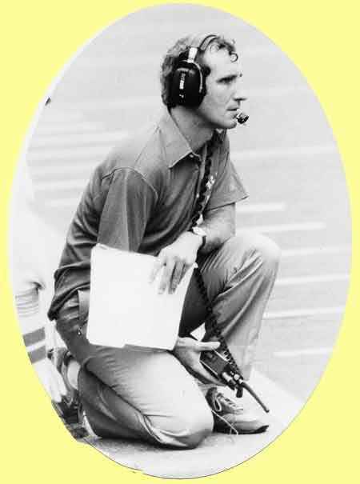
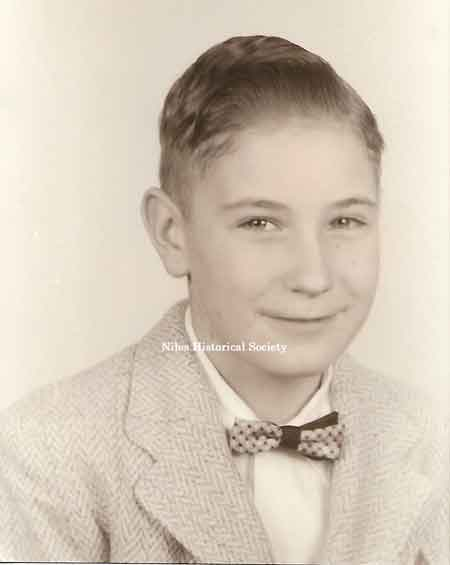
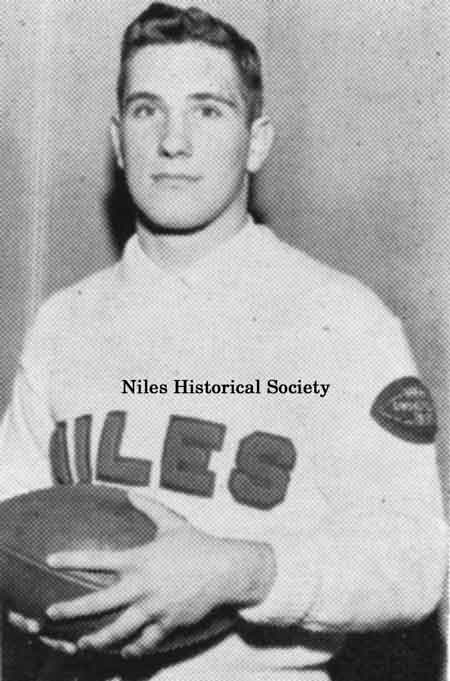
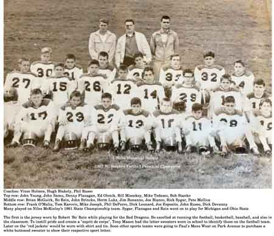
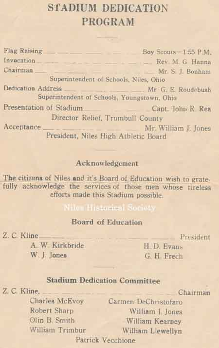
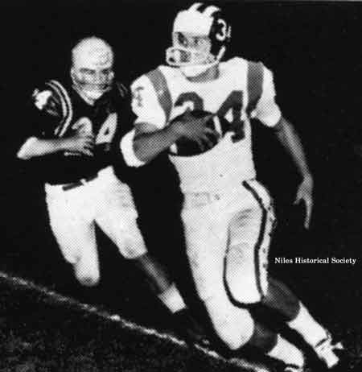
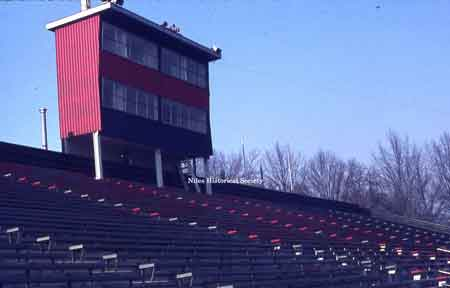
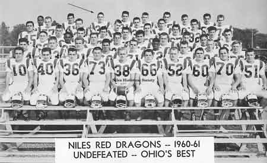
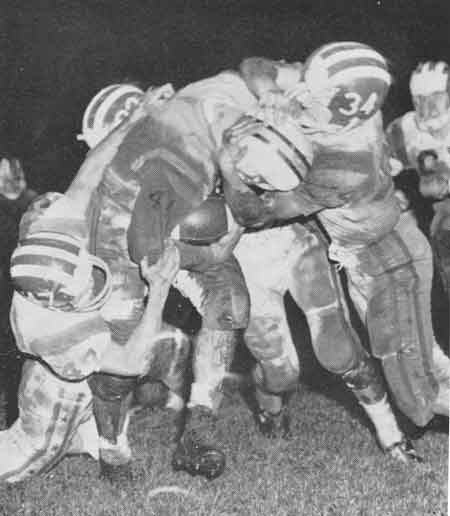
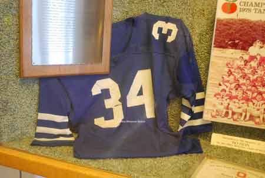

Bo Rein
{kind=link}

Coach Bo Rein
{kind=link}

Bo's fifth grade class photograph. This would be about the time that Bo began playing baseball on a team with his older brother.
{kind=link}

Senior Bo rein wearing the Niles McKinley football letter sweater with the 1961 State Champion medallion on his sleeve.
{kind=link}

St. Stephen 1957 football team
{kind=link}
Bo Rein’s First Communion photograph.

Bo Rein posing for high school baseball photograph.

Teddy Pappas, first high school All-American from Niles.1960

Phil Ragazzo played high school football for McKinley High, graduating in1934. He was elected All-American at Western Reserve in 1937.

Jim "Sonny" Capuzzi, a 1950 graduate of McKinley High played defensive half back for two years with the Green Bay Packers of the NFL.
{kind=link}

Centennial Souvenir Program
{kind=link}

From the construction of cement stands with wooden bleachers in 1934, the Niles football stadium experienced an expansion in 1963 to a capacity of over 18,000 seats.

Centennial Souvenir Program

Cheerleaders posing in front of Riverside Stadium, ca 1948. The football stadium was built as a US Government WPA project in 1934. The concrete stands had wooden bleacher seats and locker rooms.

1943 view of the visitor's side of the original football stadium. In the distance stands Washington Elementary School.

The name of the stadium was changed from Riverside Stadium to Bo Rein Memorial Stadium in 1981 after members of The Class of 1963 petitioned the Niles City School Board.
{kind=link}

After the success of the football program in the early 1960s, a fundraser selling three-year season tickets provided money to expand the seating capacity. In 1966 the stadium had seating for over 18,000 and bigger pressbox.

Bo Rein Memorial Stadium has gone through a renovation and updating with the addition of artificial turf, new scoreboard, new visitor press box, a brick and iron column main entrance, new black iron decorative fencing, cleaning and repainting, and new lighted parking lots. (2013).

Aerial view of Niles McKinley High School complex and football stadium.

Northeastern Ohio Sectional Champions

Niles Basketball Team

Niles Baseball Team
{kind=link}

Bo Rein in team photograph when Niles football team was voted State Champions.
{kind=link}

Bo Rein also played defense.

Bo Rein headcoach North Carolina

Coach Tony Mason riding in Victory Parade for 1961 State Football Champions.
{kind=link}

Bo Rein’s football game jersey, #34.